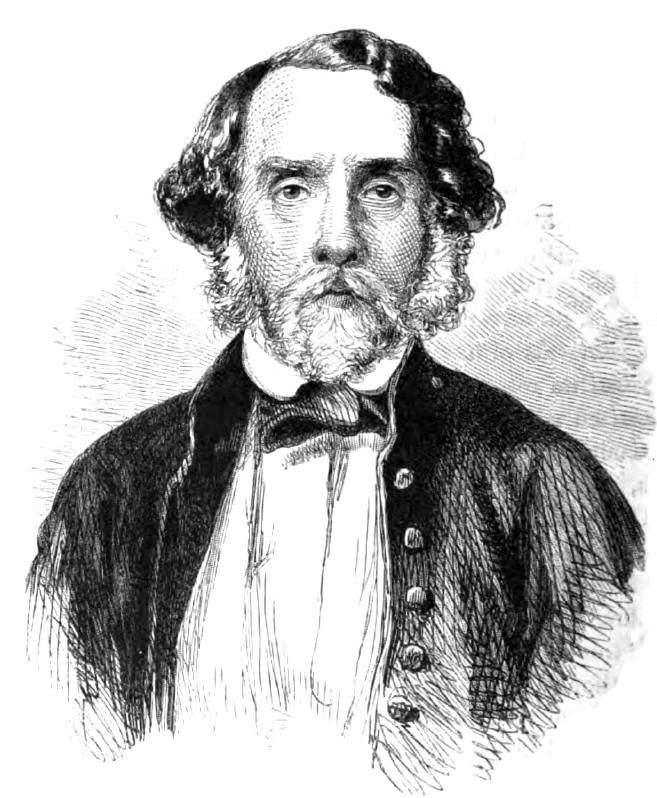
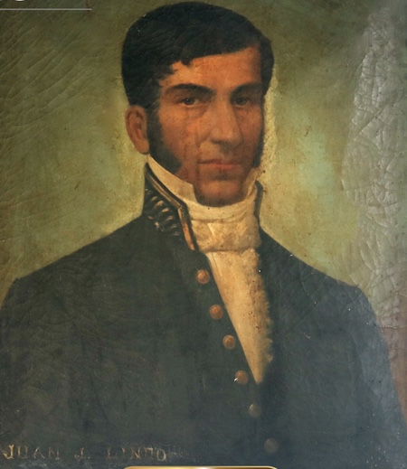

Term: 1852 - 1855
Biography: ¡Fue un defensor de las ideas liberales y del unionismo centroamericano¡ Presidente de Honduras del °1 de marzo de 1852 al 18 de octubre de 1855. Nació en la Villa de Tegucigalpa, el 09 de junio de 1805 y murió en Comayagua el 08 de enero de 1871. Hijo de José María Cabañas Rivera y Juana Fiallos. Ingreso al colegio Tridentino, donde estudio gramática latina, teología y filosofía. Ingreso al servicio militar bajo el mandato del General Francisco Morazán en 1827. Su primera experiencia militar fue en la batalla de la trinidad, el 11 de noviembre de ese año, y desde ese momento se convirtió en un líder político y militar. Cabañas llega a ser presidente electro por el Congreso y toma posesión el 1 de marzo de 1852. Como soldado morazanista intenta reconstruir la federación centroamericana y este propósito lo lleva a liberar una guerra con Guatemala la cual perdurara durante su mandato.
Achievements:
• Desarrollo del ferrocarril
• Cultivo del café
• Artesanía del junco
• Creación de escuelas publicas
• Lucho contra la Inter versión guatemalteca
• Defendió la unión Centroamericana
• Señalo que la republica debía ser de todos: Su lema era ‘No se trata de fundar la Republica de algunos, sino de todos’
• Cabañas es considerado una de las personas mas honradas de la historia de Honduras. Su legado se ha mantenido a lo largo del tiempo como un modelo ciudadano de integridad, honestidad, transparencia y rendición de cuentas en la administración de los asuntos públicos.
Term:1864 - 1872
Biografia: José María Medina fue un militar y político hondureño que desempeñó un papel crucial durante el período conservador en Honduras. Nació el 19 de marzo de 1826 en Sensenti, Intibucá. Fue presidente en varias ocasiones entre 1864 y 1872, alternando períodos de mandato interrumpidos. Este período se caracterizó por la consolidación de las políticas conservadoras en Honduras, con un enfoque en el fortalecimiento del poder central, la alianza con la iglesia católica y el intento de mantener estabilidad en medio de conflictos regionales. En el plano internacional, su gobierno estuvo influenciado por tensiones entre las fuerzas liberales y conservadoras en Centroamérica, reflejando las luchas por el poder en la región.
Logros: José María Medina contribuyó significativamente al desarrollo de Honduras en varios aspectos:
Políticos: Implementó una serie de reformas que buscaban centralizar el poder y fortalecer al estado hondureño. Aunque su mandato tuvo tintes autoritarios, buscó mantener la estabilidad interna.
Económicos: Promovió la construcción de infraestructura, como caminos y puentes, para mejorar el comercio. También fomentó la agricultura y buscó atraer inversión extranjera.
Sociales: Mantuvo una relación cercana con la iglesia católica, lo que le permitió consolidar su base de apoyo entre sectores conservadores de la población.
Term: 1847 - 1848
Biography: Juan Nepomuceno Fernández Lindo y Zelaya nació el 16 de mayo de 1790 en Tegucigalpa, Honduras. Regresó a Honduras en 1842 y el 12 de febrero de 1847 fue elegido presidente constitucional del Estado de Honduras, cargo que ejerció hasta el 4 de febrero de 1848. Durante su mandato se creó la Universidad Nacional de Honduras y se promulgó la nueva Constitución Política de 1848, en la que se establecía un período presidencial de cuatro años. De acuerdo con esta, resultó electo para un nuevo período que concluyó el 1 de febrero de 1852. Dentro de sus características se encuentra que creó el impuesto por introducción de mercaderías, constituyó un fondo de peaje para mejoras de caminos, y en 1847 fijó un impuesto de dos reales por caballería de tierra, pagado anualmente, con el cual fomentó la instrucción pública. También mandó a redactar los códigos Civil y Penal, pero no los publicó.
Achievements: Fundar la Universidad Nacional de Honduras (UNAH) en 1847. Promulgar la Constitución de 1848, estableciendo períodos presidenciales de cuatro años. Fomentar la educación pública mediante impuestos específicos. Mejorar la infraestructura vial con fondos de peaje. Ordenar la redacción de los códigos Civil y Penal (no publicados). Establecer un impuesto sobre mercaderías para fortalecer la economía.
La historia de Honduras es rica y variada, marcada por el desarrollo de grandes civilizaciones, la colonización, y los desafíos políticos y sociales que han forjado la identidad del país.
Antes de la llegada de los europeos, Honduras estuvo habitada por civilizaciones indígenas avanzadas como los mayas, los lencas, y los chortíes. La región maya de Copán fue un importante centro cultural y científico que floreció entre los siglos V y IX, conocido por sus monumentos y jeroglíficos.
En 1524, los españoles, liderados por Cristóbal de Olid, llegaron a Honduras, enfrentándose a la resistencia indígena. Posteriormente, Hernán Cortés consolidó la conquista. Durante el periodo colonial, Honduras formó parte del Reino de Guatemala bajo la administración del Virreinato de Nueva España. Su economía se basaba principalmente en la minería, especialmente de oro y plata, aunque la explotación de los recursos naturales y la mano de obra indígena tuvo un fuerte impacto en la población nativa.
Honduras declaró su independencia de España el 15 de septiembre de 1821, junto con el resto de Centroamérica. Tras un breve período como parte del Imperio Mexicano de Iturbide, se unió a la Federación de Provincias Unidas de Centroamérica en 1823. Sin embargo, las tensiones internas llevaron a su disolución en 1838, y Honduras se convirtió en una república independiente.
El siglo XIX estuvo marcado por luchas políticas entre liberales y conservadores, que disputaban el control del gobierno. Durante este periodo, líderes como Francisco Morazán abogaron por la unidad centroamericana, aunque enfrentaron oposición interna. En 1847, se fundó la Universidad Nacional, y se realizaron reformas para modernizar la economía y la educación.
A inicios del siglo XX, las compañías bananeras estadounidenses, como la United Fruit Company, adquirieron gran influencia en Honduras, convirtiéndola en una "república bananera". Aunque estas empresas impulsaron la economía, también generaron dependencia económica y desigualdades.
El siglo XX estuvo plagado de dictaduras militares, intervenciones extranjeras y conflictos sociales. En 1982, se aprobó una nueva Constitución que marcó el retorno a la democracia, aunque los retos políticos persistieron.
En el siglo XXI, Honduras ha enfrentado desafíos como la corrupción, la pobreza y la violencia, junto con esfuerzos por fomentar el desarrollo económico y social. A pesar de las dificultades, el país mantiene su rica herencia cultural y su espíritu resiliente.
Honduras es hoy un país en constante transformación, con una historia que refleja tanto sus luchas como su potencial para el progreso.
https://www.buscabiografias.com/biografia/verDetalle/12056/Juan%20Lindo.